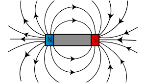
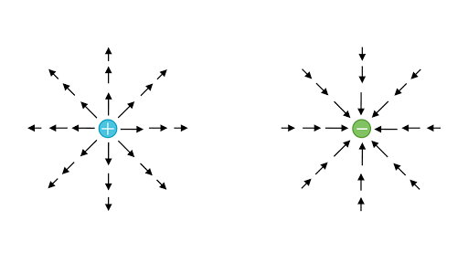
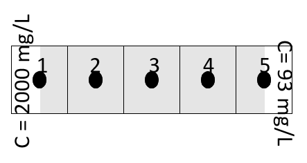

Table of Contents
1 One dimensional steady-state finite-volume approximation
1.1 Summary to this point
1.2 Fick’s law of diffusion
1.3 Your turn
1.4 Your turn
1.5 Your turn
1.6 Your turn
1.7 Fick’s law of diffusion of solutes in porous media
1.8 Your turn
1.8.1 Aside: Gradients in 3 dimensions
1.9 Gridblock fluxes in terms of concentrations
1.9.1 1 Total fluxes as specific fluxes
1.10 Your turn
1.11 Your turn
1.11.1 2 Specific fluxes in terms of Fick’s law
1.11.2 3 Discrete approximation for Fick’s law
1.11.3 What is a reasonable way to do this?
1.11.4 gridblock 4:
1.11.5 Boundary value problem checklist
2 Context
3 Link to the TMF problem
4 General idea between
5 Continuity equation
5.1 The continuity equation
5.2 Physical interpretation of the divergence
We have developed a 1-D stencil for a gridblock C to generate an steady-state equation for each interior gridblock: \begin{align*} \left(J_{EC}+J_{WC}\right) &= 0 \\ \end{align*}

where the gridblocks are sized \(\Delta x\), \(\Delta y\), \(\Delta z\)

We use the stencil to generate the equations for a simple 5 - gridblock example:

We generated the following equations:
Gridblock
Equation
1
2
3
4
5
Recall, the equations for gridblock 1 and 5 came from the boundary conditions.
Next: we need to represent the fluxes such as \(J_{12}\) in terms of the dependent variable of interest - concentration. We do that with Fick’s law of diffusion.
Concept: solutes (dissolved substances) move from areas of high concentration to areas of low concentration. (Why?)
Intuition: * rate of diffusion is proportional to gradient in concentration * mass flows from high concentrations towards lower concentrations
Fick’s law (the x component)
\begin{align*} j_x = - D {\partial c\over \partial x}\\ \end{align*}
where * \(j_x~\left[{M\over L^2 T}\right]\) is the x-component of the specific mass flux, * \(D\) is the diffusion coefficient and * \(\partial c\over \partial x\) is the x-component of the gradient in concentration.
Why the minus sign in Fick’s law?
Your answer here
What are the dimensions of the diffusion coefficient?
What is the magnitude (value) of the concentration gradient?
What is the direction of the concentration gradient?
What is the direction in which solutes are diffusing?
Your answers here.
We have to modify Fick’s law slightly to apply porous media. We need to introduce porosity to account for the fact that diffusion only occurs in the pore space.
\begin{align*} j_x = - D {\partial (c\theta) \over \partial x}\\ \end{align*}
where * \(\theta ~\left[{\cdot}\right]\) is the porosity (dimensionless)
Now let’s compute the flux. Consider the same problem as above, where the diffusion coefficient is \(D=10^{-10}~m^2/s\), and the porosity is \(\theta = 0.3\).
If the area perpendicular to this flux direction is \(4\times10^4~m^2\) (the area of the bottom of a modest tailings pond), how much mass is transported by diffusion in one day?
Recall, that the specific flux \(j\) is the mass flux of solute per unit area per unit time and that \(J=jA\), where \(A\) is the area normal to (perpendicular to) the component of flux.
Your answer here.
The gradient is a vector that points in the direction that a function is increasing. In cartesian coordinates, it has \(x\), \(y\) and \(z\) components. The diffuse flux is a gradient that points in the direction that concentration is decreasing. Hence the minus sign in Fick’s law. So the diffusive flux is also a vector: \begin{align*} j_x &= - D {\partial (c\theta) \over \partial x}\\ j_y &= - D {\partial (c\theta)\over \partial y}\\ j_z &= - D {\partial (c\theta)\over \partial z}\\ \end{align*}
We’ve switched to partial derivatives only to indicate that the concentration is a function of several independent variables (\(x\), \(y\), and \(z\)). We’ll be pretty loose with our partials and non-partials (impartials??!), but it is almost always clear from the context what is meant.
We’ll do this in three steps: 1. We’ll write the total fluxes in terms of specific fluxes. 2. We’ll write specific fluxes in terms of Fick’s law. 3. We’ll introduce a discrete approximation for Fick’s law.
Let’s look at our stencil equation:
First, let’s express the total fluxes in terms of specific fluxes:
What is the correct value of the area \(A\) to write \(J_{WC}\) in terms of \(j_{WC}\) for this example?
Your answer here:
$A= $
What is the correct value of the area \(A\) to write \(J_{WC}\) in terms of \(j_{WC}\) for the general case above?
Your answer here: $ A = $
(remember to write \(\Delta\) use $\Delta$ - or don’t bother with math type.
$\Delta$
For a gridblock C oriented as below, what is the appropriate component of Fick’s law?
Choose one of (erase the two that are incorrect): \begin{align*} j_x &= - D {\partial (c\theta) \over \partial x}\\ j_y &= - D {\partial (c\theta)\over \partial y}\\ j_z &= - D {\partial (c\theta)\over \partial z}\\ \end{align*}
We need a way to approximate specific fluxes such as \(j_x = - D {\partial (c\theta) \over \partial x}\) in terms of concentrations at nodal values in the centre of gridblocks as shown below.
Describe in words how you would approach this.
Change this stencil to the correct equation for gridblock 4.
[ ]:
To solve a boundary value problem requires: 1. knowledge of the equations that govern the dependent variable. 2. specification of the problem domain. 3. specification of properties of the problem domain. 4. the value of the dependent variable or its derivatives on the boundary.
Let’s go through the checklist for our problem. 1. we have not developed these yet, but we are going to use conservation of mass and an expression for diffusion to develop the equations that govern concentration.
Why go to the trouble with the fancy math? Couple of reasons: * it is the most succinct and unambiguous way to state a physical principle. In that sense, mathematics is a language with a grammar and rules that allow one to make precise statements. We use the language of mathematics to write literature: precise descriptions of physical systems . * once we have a mathematical description, we can use the grammar rules of mathematics and manipulate the expressions to, for example, simplify them, or use calculus to derive solutions to our expressions.
So far we have solved 0 dimensional problems:
we have considered the mass of water to be given by one value
we have considered that the concentration of sulfates was given by one value and that this value was the same at any point in the TMF.
In reality, the concentration of sulfates is not necessarily the same everywhere, and the spatial distribution or evolution of the contaminant is important to know.
Consider a factory releasing a contaminant: this contaminant will be transported in space and time.
if the factory releases this contaminant in a river, it will follow the river current
if it is released in the atmosphere, it will follow windspeed
if is is released in the groundwater, it will follow the groundwater flow
But the windspeed, the river current, the groundwater flow are not the same everywhere (they are not uniform). If we want to be able to predict where the contaminant goes, we need to understand which processes are responsible for its movement.
In a 3 dimensional space, the concentration can be different at every point in space. But also, the concentration at each point in space can evolve in time. In general, the concentration will be described by a function \(c(x,y,z,t)\) which represents the concentration at each point of coordinates \((x,y,z)\) for each time \(t\).
When we have developped Euler’s approaches, we have divided into small intervals. We are going to do the same with space. This is called discretization. It is the idea of splitting a variable who can take any value on a real axis into subdomains where this variable is supposed to be constant.
Without a discretization, we would have to solve a problem for each possible \((x,y,z)\), which would be impossible.
To introduce this spatial behaviour, let us go back to the TMF problem. The conceptual model could be expressed like this:
This “spatial” view of the method we have applied corresponds precisely to the finite volume - difference method we will use. In our problem, we were only interested in one “point” in space, the TMF. This “point” representation of this TMF actually arises from a discretization of space.
We have computed the evolution the mass/concentration of sulfates in that “point” by computing the fluxes which were going in and out of this “point”.
What if the amount of sulfates in the pit/mill was not “infinite” (constant in all time)? Well, that would mean that \(c_{\text{pit}}\) would decrease during time, and the flux incoming from the pit would decrease as well. If that is the case, we now need to add another equation to compute the evolution of the concentration in the pit, and also a formulation which links the flux between the pit/mill towards the TMF.
That is the central idea for the resolution of any transient (not steady) problem including spatial variation. The evolution of the concentration at each point of interest during a certain time is computed by
summing all the fluxes going in - all the fluxes going out
considering these fluxes are constant in time during that period of time ( // Euler’s method).
So what we need, is to be able to compute these fluxes.
Watch out, in physics, flux is usually defined as the amount (of matter, energy, …) which goes through a surface per unit of time. A mass flux is described in kg/m\(^2\)/s. Above, we have described a “flux” in mg/s. In the following, flux \(\phi\) will be denoted in units of Mass per unit of surface per unit of time.
If we focus on the central volume here, it might exchange fluxes \(\phi\) with its neighbouring volumes. In a 2D space, central volume \(i\) has 4 neighbours: North-East-South-West, with whom it can exchange matter (or energy, …).
So, if we know the mass-flux between volume \(i\) and volume North, \(\phi_{i\rightarrow \text{North}}\), that means that the mass in volume \(i\) is evolving by the amount:
\begin{equation} \frac{dM}{dt} = \sum_j \phi_{j\rightarrow i} S_{ij} \end{equation}
where \(j\) represents the set of every neighbour (here North, East, South, West). In 1D, there are 2 neighbours, in 3D, there are 6 neighbours.
Where S is the surface (in m\(^2\)) of the interface between volumes i and North. So, to compute the evolution of mass in volume \(i\), we only need to find the values of the different fluxes.
The idea behind the space discretization is that, in each “volume”, the concentration is uniform and has only one value. That also means that, on every surface separating two volumes, the fluxes are uniform.
Multiplying both ends by the volume of water \(V_0\) yields:
So, if the concentration is uniform in the volume \(V\), that means that the mass can be obtained by:
\begin{equation} M = \int_V c dV = c \int_V dV = cV \end{equation}
The evolution of the mass arises from the different fluxes
\begin{equation} \frac{\Delta M}{\Delta t} = \sum_j \phi_{j\rightarrow i} S_{ij} = -R \end{equation}
The rate of matter evolution \(R\) (mg/s) through any surface is usually given by the integral of the flux over the surface: \begin{equation} R = \oint_S \overrightarrow{\phi}d\overrightarrow{S} \end{equation}
where \(d\overrightarrow{S}\) represents the unit normal vector oriented towards the outside of the closed surface. So, \(R\) is positive when matters is going out ot the volume. This surface integral can be decomposed, in our cases, as the sum over the 4 straight lines delimiting our volume. And, since the flux is uniform through these straight lines, this integral becomes straightforward to compute:
:nbsphinx-math:`begin{equation} begin{array}{lll} R & = & displaystyle{ oint_S overrightarrow{phi}doverrightarrow{S}} \
& = & int_{S_{textrm{North}}} phi_{textrm{North}} dS + int_{S_{textrm{East}}} phi_{textrm{East}} dS + … \ & = & phi_{textrm{North}} int_{S_{textrm{North}}} dS + phi_{textrm{East}} int_{S_{textrm{East}}} dS + … \ & = & phi_{textrm{North}}S_{textrm{North}} + phi_{textrm{East}}S_{textrm{East}} + phi_{textrm{South}}S_{textrm{South}} + phi_{textrm{West}}S_{textrm{West}} \ & = & sum_j phi_{irightarrow j} S_{ij}
end{array} end{equation}`
But there is a math theorem (Green-Ostrogradski) which also states that
The rate of matter evolution \(R\) (mg/s) through any surface is usually given by the integral of the flux over the surface: \begin{equation} \oint_{S(V)} \overrightarrow{\phi}d\overrightarrow{S} = \int_V \mathrm{div} \overrightarrow{\phi} \end{equation}
This is the “divergence” theorem. The divergence operator is defined as:
\begin{equation} \mathrm{div} \overrightarrow{\phi} = \overrightarrow{\nabla} \cdot \overrightarrow{\phi} \end{equation}
So, combining the different equation together, we get
:nbsphinx-math:`begin{equation} begin{array}{llll}
& frac{dm}{dt} & = & sum_j phi_{jrightarrow i} S_{ij} \
Longleftrightarrow & displaystyle{frac{d}{dt} int_V c dV} & = & displaystyle{ - oint_S overrightarrow{phi}doverrightarrow{S}} \ Longleftrightarrow & displaystyle{frac{d}{dt} int_V c dV} & = & displaystyle{ - int_V mathrm{div} overrightarrow{phi} dV} end{array} end{equation}`
And, since the integral over the same volume \(V\) has to be equal on both sides, that means that what is inside the integrals have to be equal, which gives the divergence equation:
\begin{equation} \frac{dc}{dt} + \mathrm{div} \overrightarrow{\phi} = 0 \end{equation}
This is known as the continuity equation, which is used in many areas of physics (quantum mechanics, fluid mechanics, energy, mass balance, …).
The divergence theorem states that, for any given volume, the integral of the flux (mg/m\(^2\)/s) over the surface which defines that volume (mg/s) corresponds to the integral over the volume of the “divergence” of the flux. \begin{equation} \oint_{S(V)} \overrightarrow{\phi}d\overrightarrow{S} = \int_V \mathrm{div} \overrightarrow{\phi} \end{equation}
Remember Maxwell’s law of electromagnetism? If you look at a magnet, the lines describing the magnetic field always goes from the north to the south “pole”. And over one line, the value of the magnetic field \(B\) (in Tesla), is constant.
That means that, if you define a volume \(V\) whatsoever, delimited by a closed surface \(S(V)\), everything that is coming in, is going to come out. Maxwell’s law for that is
\begin{equation} \mathrm{div} \overrightarrow{B} = 0 \end{equation}
This is not the case for the electric field.
In this case, the presence of one electric charge will generate electric field lines. So if you take any volume, whose incorporates that electric charge, the integral of the flux will be positive (for a positive charge). Maxwell’s law states, with \(\rho\) being the charge density:
\begin{equation} \mathrm{div} \overrightarrow{E} = \frac{\rho}{\epsilon_0} \end{equation}
Here in our case, the divergence of a vector field \(\rightarrow{q}\) will basically indicate: \begin{equation} \mathrm{q} \propto \textrm{What goes out} - \textrm{What goes in} \end{equation}
So, the continuity equation:
\begin{equation} \frac{dc}{dt} = - \mathrm{div} \overrightarrow{\phi} \propto \textrm{What goes in} - \textrm{What goes out} \end{equation}